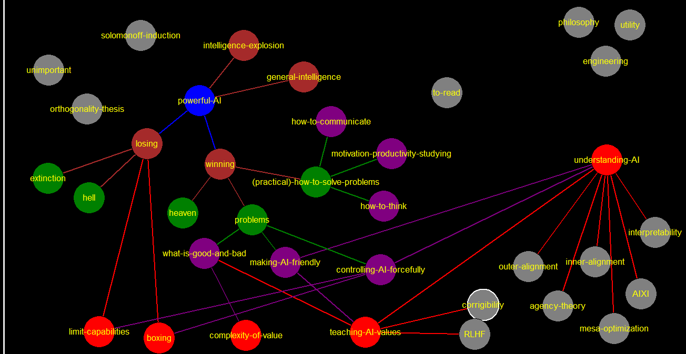

corrigibility
how-to-communicate
to-read
limit-capabilities
[[losing-->losing]]
boxing
[[losing-->losing]]
RLHF
controlling-AI-forcefully
[[understanding-AI-->understanding-AI]] [[boxing-->boxing]] [[limit-capabilities-->limit-capabilities]]
teaching-AI-values
[[solve-morality-->what-is-good-and-bad]] [[understanding-AI-->understanding-AI]] [[RLHF-->RLHF]] [[corrigibility-->corrigibility]]
motivation-productivity-studying
how-to-think
engineering
philosophy
(practical)-how-to-solve-problems
go to practical section [[how-to-think-->how-to-think]] [[motivation-productivity-->motivation-productivity-studying]] [[how-to-communicate-->how-to-communicate]]
problems
[[solve-morality-->what-is-good-and-bad]] [[make-AI-your-friend-->making-AI-friendly]] [[controlling-AI-forcefully-->controlling-AI-forcefully]]
winning
[[heaven-->heaven]] [[problems-->problems]] [[how-to-solve-problems-->(practical)-how-to-solve-problems]]
losing
[[extinction-->extinction]] [[hell-->hell]]
what-is-good-and-bad
[[complexity-of-values-->complexity-of-value]]
making-AI-friendly
[[understanding-AI-->understanding-AI]] [[teaching-AI-values-->teaching-AI-values]]
extinction
[[paperclips-->paperclips]]
heaven
hell
S-risk
powerful-AI
[[dont-solve-problems-->losing]] [[solve-problems-->winning]]
understanding-AI
[[interpretability-->interpretability]] [[outer-alignment-->outer-alignment]] [[mesa-optimization-->mesa-optimization]] [[agency-theory-->agency-theory]] [[inner-alignment-->inner-alignment]] [[AIXI-->AIXI]]
interpretability
agency-theory
unimportant
complexity-of-values general-intelligence or not-obviously-the-most-important-thing. same thing.
general-intelligence
https://www.lesswrong.com/tag/general-intelligence [[powerful-AI-->powerful-AI]]
complexity-of-value
utility
complexity-of-values-->complexity-of-value how-to-solve-problems-->(practical)-how-to-solve-problems
solomonoff-induction
orthogonality-thesis
[[dangers-->dangers]]
intelligence-explosion
[[powerful-AI-->powerful-AI]]
outer-alignment
inner-alignment
mesa-optimization
AIXI